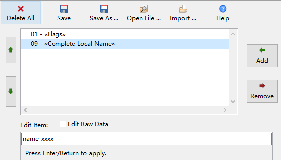

4 GAP - 广播
4.1 概览
支持 4.0 ~ 5.1 规范定义的所有 BLE 广播类型：
- 传统广播（Legacy Adv）
- 扩展广播（Extended Adv）
- 周期广播（Periodic Adv）
传统广播的有效载荷最长为 \(31B\)，而扩展广播（包括周期广播）每个广播包的有效载荷最长接近 \(255B\)， 每个扩展广播又可包含多个广播包（广播包链条），总有效载荷最长达 \(1650B\)。
4.1.1 类型
广播有几种不同的属性：
可连接：接受对方发来的连接建立请求
可扫描：接受对方发来的扫描请求，并回复扫描响应
定向：只用于可连接广播，只接受特定方发来的连接建立请求
高占空比（High Duty）：以更高的频率11重复发送广播数据，常用于实现快速重连（定向可连接广播）， 最长只持续 \(1.28s\)。从 5.0 开始，高占空比广播也可用于不可连接广播。
对于传统的扫描响应包，其有效载荷最长同样为 \(31B\)；扩展的扫描响应包，其有效载荷最长同样为 \(1650B\)。 开发者可以要求协议栈收到扫描请求时上报事件。
总结起来，传统广播共有 5 种类型，见表 4.1。
| 类型 | PDU 类型 | 广播数据 | 扫描响应数据 |
|---|---|---|---|
| 非定向可连接可扫描广播 | ADV_IND | 支持 | 支持 |
| 定向可连接广播（非高占空比） | ADV_DIRECT_IND | 不支持 | 不支持 |
| 定向可连接广播（高占空比） | ADV_DIRECT_IND | 不支持 | 不支持 |
| 非定向可扫描广播 | ADV_SCAN_IND | 支持 | 支持 |
| 非定向不可连接不可扫描广播 | ADV_NONCONN_IND | 支持 | 不支持 |
4.1.2 过滤策略
对于可连接或可扫描广播，可以只接受某些设备的连接建立请求或扫描请求，这就是所谓的过滤策略。BLE 定义了 4 种策略：
typedef enum adv_filter_policy
{
// 接受所有的连接建立请求或扫描请求
ADV_FILTER_ALLOW_ALL = 0x00,
// 只接受白名单内的扫描请求，接收所有的连接建立请求
ADV_FILTER_ALLOW_SCAN_WLST_CON_ALL,
// 只接受白名单内的连接建立请求，接收所有的扫描请求
ADV_FILTER_ALLOW_SCAN_ALL_CON_WLST,
// 只接受白名单内的连接建立请求和扫描请求
ADV_FILTER_ALLOW_SCAN_WLST_CON_WLST
} adv_filter_policy_t;4.1.3 PHY
对于扩展广播，既需要在主广播信道（37/38/39）上发送少量信息，也需要在其它信道（即辅广播信道）上发送，所以需要分别设置主、 辅广播信道所使用的 PHY，其中主广播信道只能使用 1M、Coded 等两种 PHY，而辅广播信道 3 种 PHY 皆可。
4.1.4 广播集
从 5.0 开始，BLE 支持并发发送多个广播，每个广播称为一个广播集12，由广播集句柄指示。 每个广播使用各自独立的参数，包括地址、广播类型、PHY、数据等。 开发者可以为广播集指定一个 4 比特长的 SID。
4.1.5 相关事件
HCI_SUBEVENT_LE_ADVERTISING_SET_TERMINATED一个广播集停止广播时，HCI 回调会收到
HCI_SUBEVENT_LE_ADVERTISING_SET_TERMINATED事件。这个事件的触发条件如下：- 通过 GAP API 停止广播；
- 连接建立；
- 已达到预定的广播时长、次数，自动停止；
- 极端情况：Controller 无法完成任务处理。
HCI_SUBEVENT_LE_SCAN_REQUEST_RECEIVED开发者使能扫描请求指示后，HCI 回调会收到
HCI_SUBEVENT_LE_SCAN_REQUEST_RECEIVED事件。
4.2 使用说明
4.2.1 配置广播
主要用到 4 个函数，gap_set_adv_set_random_addr、gap_set_ext_adv_para、gap_set_ext_adv_data 和 gap_set_ext_scan_response_data，
分别配置随机地址、参数、广播数据和扫描响应数据。
参数最复杂的函数是 gap_set_ext_adv_para，其原型为：
uint8_t gap_set_ext_adv_para(
// 广播集句柄
const uint8_t adv_handle,
// 属性比特组合
const adv_event_properties_t properties,
// 广播间隔
const uint32_t interval_min,
const uint32_t interval_max,
// 使用的主广播信道比特组合（0x7 表示使用全部 3 个主广播信道）
const adv_channel_bits_t primary_adv_channel_map,
// 使用的地址类型（随机地址来自 gap_set_adv_set_random_addr）
const bd_addr_type_t own_addr_type,
// 设置定向广播的对端地址
const bd_addr_type_t peer_addr_type,
const uint8_t *peer_addr,
// 过滤策略
const adv_filter_policy_t adv_filter_policy,
// 发射功率，单位为 dBm
const int8_t tx_power,
// 主信道 PHY
const phy_type_t primary_adv_phy,
// 是否允许跳过部分辅信道的发送（填 0 表示总是发送）
const uint8_t secondary_adv_max_skip,
// 辅信道 PHY
const phy_type_t secondary_adv_phy,
// 广播集 SID
const uint8_t sid,
// 使能扫描请求上报
const uint8_t scan_req_notification_enable);其中，properties 为以下比特的组合：
// 可连接广播
#define CONNECTABLE_ADV_BIT ...
// 可扫描广播
#define SCANNABLE_ADV_BIT ...
// 定向广播
#define DIRECT_ADV_BIT ...
// 高频广播
#define HIGH_DUTY_CIR_DIR_ADV_BIT ...
// 传统广播
#define LEGACY_PDU_BIT ...
// 匿名广播
#define ANONY_ADV_BIT ...
// 包含发射功率
#define INC_TX_ADV_BIT ...对于传统广播，比特组合必须符合表 4.1 的定义。
对于扩展广播，不能既可连接又可扫描；不支持高占空比广播。
匿名广播中不包含广播者的地址，所以称为“匿名”广播。附加 INC_TX_ADV_BIT 比特后，
广播内自动包含发射功率，比在载荷内通过 AD 项 “0x0A - «Tx Power Level»”发送开销更小。
4.2.2 广播数据
使用 Wizard 里的广播数据编辑器可以方便地编辑数据13。 广播数据编辑器同时可以生成一些常数，方便开发者编程修改广播数据。 下面的例子把蓝牙地址的最末两个字节填充到设备名称的最后 4 个字符里。
用广播数据编辑器生成初始数据（图 4.1）：
图 4.1: 用广播数据编辑器生成初始数据
// 0x01 - «Flags» 2, 0x01, 0x06, // 0x09 - «Complete Local Name»: name_xxxx 10, 0x09, 0x6E, 0x61, 0x6D, 0x65, 0x5F, 0x78, 0x78, 0x78, 0x78, // Total size = 14 bytes导入广播数据及常数：
static uint8_t adv_data[] = { #include "../data/advertising.adv" }; // 这个文件里是编辑器生成的常数 #include "../data/advertising.const"修改广播名称
void assign_name(const uint8_t *id_bytes) { char temp[5]; sprintf(temp, "%02X%02X", id_bytes[0], id_bytes[1]); // ADVERTISING_ITEM_OFFSET_COMPLETE_LOCAL_NAME 是编译器自动生成的常数， // 表示 "name_xxxx" 在整个数据里的偏移位置 memcpy(adv_data + ADVERTISING_ITEM_OFFSET_COMPLETE_LOCAL_NAME + 5, temp, sizeof(temp) - 1); } // 假设地址存放于 rand_addr assign_name(&rand_addr[4]);
4.2.3 配置周期广播
周期广播总是与一个不可连接、不可扫描的扩展广播绑定。使用 gap_set_ext_adv_para 设置了扩展广播参数后，
就可以通过 gap_set_periodic_adv_para 创建相关联的周期广播：
uint8_t gap_set_periodic_adv_para(
// 使用同一个广播集句柄
const uint8_t adv_handle,
// 广播周期
const uint16_t interval_min,
const uint16_t interval_max,
// 属性（仅支持 0 或 PERIODIC_ADV_BIT_INC_TX
const periodic_adv_properties_t properties);周期广播的数据通过 gap_set_periodic_adv_data 设置，而不是 gap_set_ext_adv_para。
4.2.4 起停广播
通过 gap_set_ext_adv_enable 控制多个广播集的使能、停止状态。
uint8_t gap_set_ext_adv_enable(
// 使能还是停止？
const uint8_t enable,
// 广播集数目
const uint8_t set_number,
// 每个广播集的使能参数
const ext_adv_set_en_t *adv_sets);这个函数支持一种快速停止所有广播的用法：gap_set_ext_adv_enable(0, 0, NULL)。除此以外，都需要用 adv_sets
数组表明每个广播集的句柄。
对于使能广播的情况，adv_sets 使用另外两个参数用来控制广播次数：
typedef struct ext_adv_set_en
{
uint8_t handle;
// 广播持续时间，单位为 10ms。0ms 表示一直广播
uint16_t duration;
// 最大广播次数。0 表示一直广播
uint8_t max_events;
} ext_adv_set_en_t;当 duration 或 max_events 条件满足时，广播就会自动停止。
4.2.5 起停周期广播
周期广播需要使用 gap_set_periodic_adv_enable 控制使能、停止状态：
uint8_t gap_set_periodic_adv_enable(
const uint8_t enable,
const uint8_t adv_handle);要“完整”地开启周期广播，需要先通过 gap_set_ext_adv_enable 使能关联的扩展广播，再用这个 API 使能周期广播。
扩展广播可以独立地关闭14。
4.2.6 为周期广播添加 CTE
参考“基于周期广播的 CTE 接收和发送”一节。